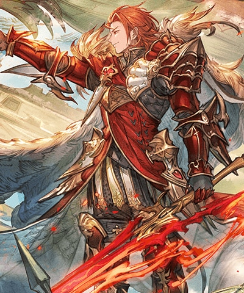

火パーシヴァル(リミテッド)
基本資訊
| 定位 | 攻擊 |
| 得意武器 | 劍 |
| 種族 | 人類 |
| CV | 逢坂良太 |
立繪
上限解放前
上限解放後
奧義
| シュトルツ･フランメ | |
| 12.5倍火屬性傷害 火傷Lv+2(最多10/不可回復)×180秒 └每T1萬HP傷害×火傷Lv(最多10萬) 自己燦炎效果(無法消除) └強壯效果(最多60%~最少20%) └30%火屬性追擊 |
技能
CD:7 |
ロート・ヴィアベル |
| 敵方8倍火屬性傷害 ・火傷Lv+1(最多10/不可回復)×180秒 └每T1萬HP傷害×火傷Lv(最多10萬) ・DA和TA-10%(累積/最多50%)×180秒 自己奧義值+20% |
|
CD:12 |
レギーレン |
| 敵方 平伏效果(不可延長/不可回復)×1T └敵人造成的傷害=0 ・恐怖效果×3T |
|
CD:12 |
ケーニヒ・ベシュテレン |
| 敵方全體9倍火屬性傷害 火屬性角色 ・火屬性攻擊+100%×1T ・30%火屬性追擊×1次 ・偷打1次 #使用後消耗燦炎效果 |
被動技能
 |
紅蓮の王道 |
| ・普攻予傷+20% ・必定TA ・免疫驅散 ・普攻無法獲得奧義值 #戰鬥開始時，獲得燦炎效果(無法消除) └強壯效果(最多60%~最少20%) └30%火屬性追擊 |
|
|
ローエン・シグザール |
| #普攻後，火傷Lv7以上時 ・敵方全體10倍火屬性傷害 ・攻擊和防禦-10%(累積/最多40%)×180秒 ・焦眉效果 └敵方受到傷害+30%×6次 |
武器